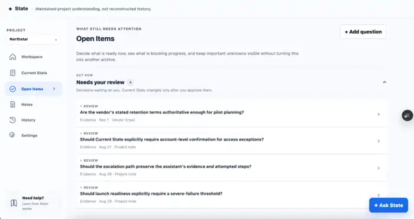

Project history is easy to preserve. Knowing what to treat as true right now is harder.
As AI projects got longer, I kept carrying summaries from one chat to the next. I wanted to know whether maintaining a project summary would work better than reconstructing context from history.
I compared raw history, stronger reconstruction instructions, and a maintained summary. The maintained version helped, but a failure in that early prototype changed what I was actually trying to build.
The problem was no longer just preserving context.
I realized I didn't want important project truth to depend on what an AI remembered or reconstructed at all.I needed an external record that both people and AI could work from, while keeping accepted understanding, new evidence, unresolved information, and project history separate.
I kept going because I wanted to understand a harder question: what should AI be allowed to change, and what should stay under human control?
State maintains a current, trustworthy, human-approved understanding of a project as new information arrives.
The core loop is simple:
Questions, History, Ask, and Copy context support the same loop, each helping keep the project's current understanding trustworthy and useful.
Meeting notes, decisions, corrections, and approved Slack conversations are preserved as evidence.
A readable view presents what the project currently treats as true.
Recommendations wait for a human to accept or leave unchanged.
Reviews, blockers, and open questions stay visible without being mistaken for facts.
Accepted changes keep before, after, reason, decision, and source together.
Answers keep accepted facts, pending reviews, questions, and evidence distinct.

Only approved Slack channels are evaluated automatically into Evidence. Everything else in Notes is still entered by hand.
AI can interpret what changed. It cannot decide what becomes true.
AI can propose that Current State should change. It cannot make that change happen. Only a person can accept a Review and move something into Current State. That's the central decision the whole product is built around.
Early on, the model turned an unresolved automation target into a confident 0%. It fit the schema perfectly but stated a decision the project had never made. That failure made the distinction between technically valid output and trustworthy product behavior concrete.


Using State changed the shape of the product.
State is most useful when a team needs more than a plausible summary.
State is not necessary for every project. It becomes more useful when information changes often, sources conflict, and a team needs control over what counts as authoritative. My biggest takeaway was simple: AI can interpret change, but product authority should stay outside the model.